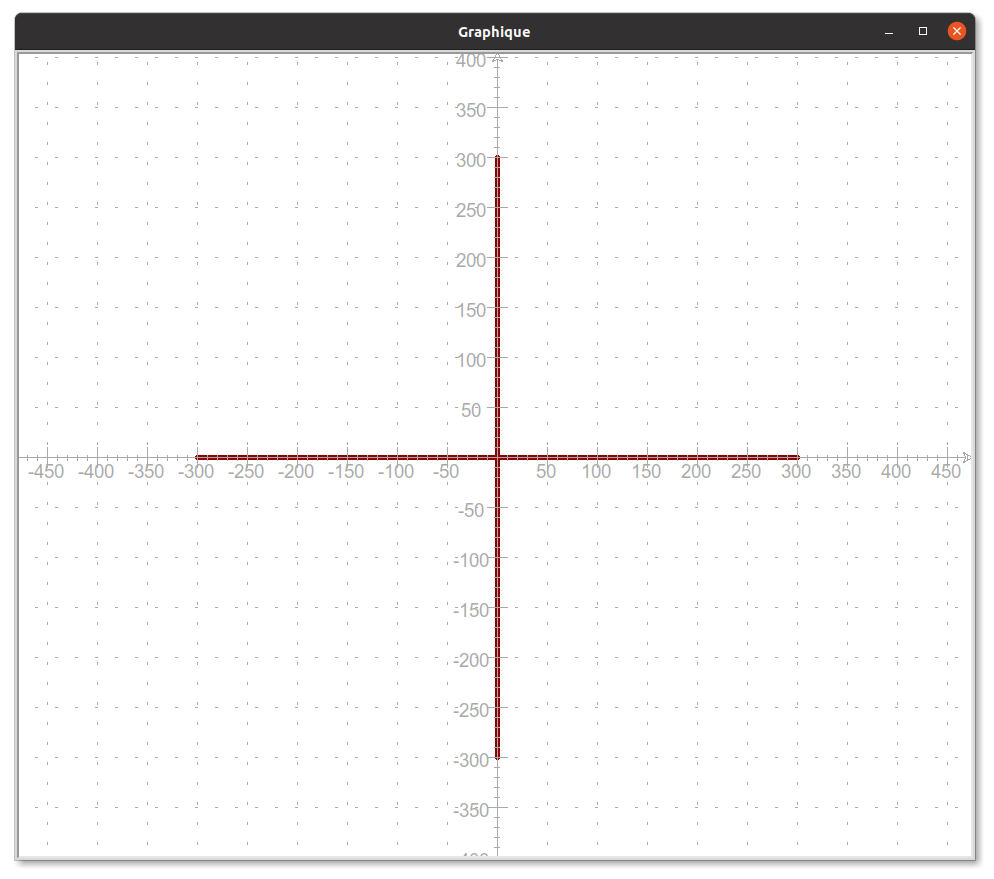
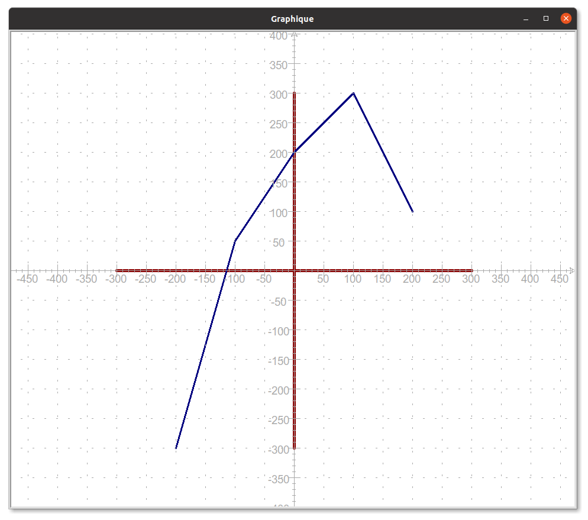
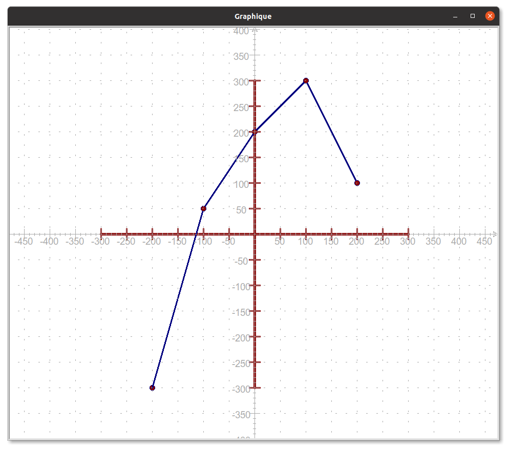
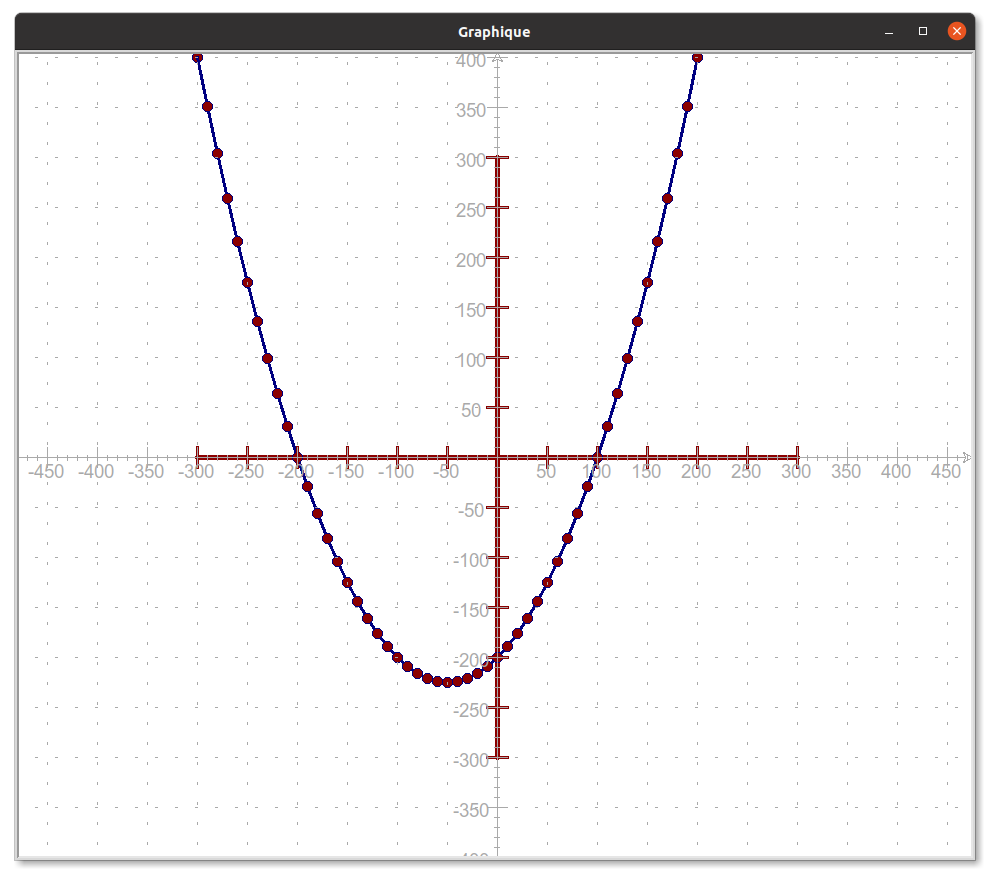

Evaluation de NSI du 02/12/2021 (ou 03/12/2021)
Première partie
La première partie de l'évaluation est un qcm à réaliser dans Pronote. La durée maximum du qcm est de 30 min, dès que vous avez terminé, vous pouvez commencer la deuxième partie.
Deuxième partie
Attention
Enregistrer votre programme dans le dossier Evaluations de votre répertoire personnel dans le dossier DS3
Le but de l'exercice est de dessiner à l'aide du module turtle un repère orthonormé (comme en mathématiques) puis de placer en les reliant une liste de points dans ce repère. On donne ci-dessous le début d'un programme Python permettant de créer les outils nécessaires au dessin :
import turtle
papier = turtle.Screen()
crayon = turtle.Turtle()
### Ecrire vos instructions à la suite pour compléter le programme
### Pour éviter que la fenêtre de dessin ne se referme
papier.exitonclick()
1. Dessiner le repère
Dessiner les axes du repère avec un crayon de couleur darkred et une épaisseur de 5 comme ci-dessous (les graduations sont là pour vous aider et ne doivent pas être reproduites)

2. Placer les points
Dans ce repère on veut placer une liste de points en les reliant. On donne ci-dessous la liste des abscisses de ces points ainsi que la liste des ordonnées :
Par exemples, le premier point à placer a donc pour coordonnées(-200;-300) et le second point (-100;50).
En utilisant un parcours de liste, placer ces points dans le repère en les reliant (crayon de couleur navy et d'épaisseur 3), vous devriez obtenir l'image suivante :

3. Graduer les axes
On souhaite maintenant tracer les graduations sur chacun des deux axes, en utilisant une ou plusieurs boucles for, tracer les graduations sur chacun des deux axes tous les 50 pixels (on tracera des graduations de 20 pixels de longueur, crayon de couleur darkred et d'épaisseur 3). Vous devriez obtenir l'image suivante :
4. Voir les points
Afin de marquer l'emplacement des points, on décide d'utiliser la fonction stamp de turtle qui dessine la forme de la tortue à l'emplacement où elle se trouve. Pour cela, on choisit une forme ronde pour la tortue à l'aide de turtle.shape("circle"), on diminue sa taille à l'aide de crayon.shapesize(0.5) et à chaque fois qu'on place un point on ajoute l'instruction crayon.stamp(). Modifier votre programme en conséquence, vous devriez obtenir le dessin suivant :

5. Bonus : pour aller plus loin
On veut tracer dans notre repère la fonction suivante :
\(f : x \mapsto \dfrac{x^2}{100}+x-200\)
- Créer par compréhension la liste d'abscisses suivante :
[-300,-290,-280,-270,-260,.....,300]
c'est à dire les entiers de-300à300de avançant de 10 en 10. - Créer par compréhension la liste d'ordonnées suivante :
[f(-300),f(-290),f(-280),......,f(300)]c'est à dire la liste des images par la fonction \(f\) des abscisses. - Tracer la fonction, vous devriez obtenir l'image suivante :

6. Projet : pour aller encore plus loin ...
Créer un programme Python permettant de simuler le tracé de fonctions à la façon d'une calculatrice graphique. Les mêmes fonctionnalités qu'une calculatrice graphique sont attendues : possibilité de définir les axes du repère, de faire des lecture graphique, de tracer plusieurs fonctions, ...